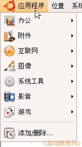
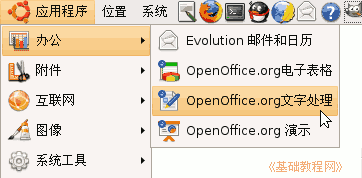
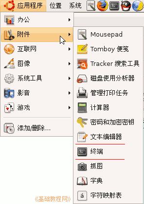
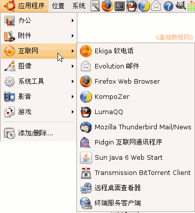
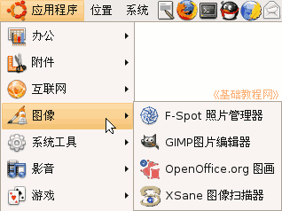
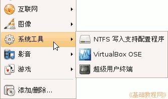
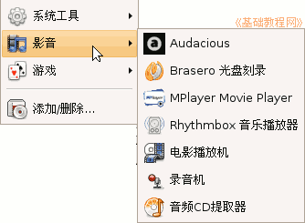
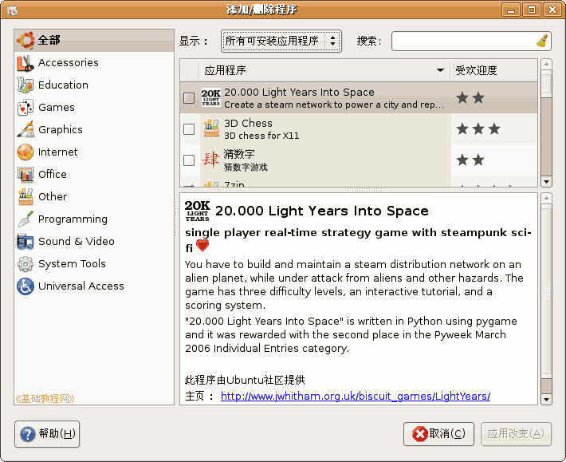
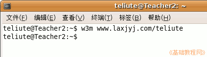
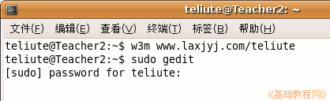

电脑操作基础
作者：TeliuTe 来源：基础教程网
三、运行程序 返回目录 下一课Ubuntu(班图)安装好以后，里面已经安装了各种常用的程序，怎样使用这些程序呢？下面我们来看一个练习；
1、找到程序
1）安装好以后，桌面上没有图标，程序都放在上面板条的第一个菜单里，旁边有几个按钮，
点击按钮的火狐图标，可以打开浏览器上网，信封图标是邮件程序；
2）用左键单击第一个菜单“应用程序”，可以发现里面的程序分成几大类，每一类后面还有子菜单；
2、各种程序
1）办公类 里面包括OpenOffice.org办公系列，有电子表格、演示文稿、文字处理，可以进行各种文档的编辑和打印；
2）附件 这一组里面是一些常用小程序，有计算器、文本编辑器(记事本)、终端等等；

3）互联网 这里面主要是跟网络有关的，如Firefox火狐上网，电子邮件，Pidgin即时通讯软件等，如果安装了LumaQQ，也在这里；

4）图像 图像里面包括照片管理器、图像处理的GIMP图片编辑器等，以及一个OpenOffice.org画图程序；

5）系统工具 这里面安装一些跟系统有关的程序，可以根据自己需要选择安装；

6）影音 里面包括各种音频、视频、VCD/DVD的播放程序，还可以自己安装其他播放程序；

7）下边的添加/删除里，可以添加或删除一些应用程序，可以进去看一看，在左边类别和上边显示里进行选择；

3、终端程序
1）有些程序安装后，并不显示在菜单里，这时候可以进入终端，用命令行运行，
例如输入 w3m 网址，可以打开文本浏览器，按字母Q键退出；

2）其他菜单里的程序，也可以用命令行来运行，例如输入 sudo gedit 可以用管理员身份打开文本编辑器；

本节学习了运行程序的基本方法，如果你成功地完成了练习，请继续学习下一课内容；本教程由86团学校TeliuTe制作|著作权所有，商业用途请与作者联系
基础教程网：http://www.laxjyj.com/teliute/
美丽的校园……
转载和引用本站内容，请保留版权信息和本站链接。